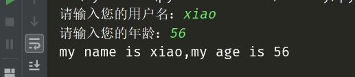

原文连接:https://www.cnblogs.com/xiaodan1040/p/11784931.html
用户交互
用户交互就是人向机器发出指令，机器分析处理后，给人们返回操作结果（装13的说法）。直白地讲，就是人往计算机中输入（input）数据，计算机输出（output）结果。交互的本质就是输入、输出。
-
input() 输入
-
在python 3.* 的版本中，input() 接收到输入的任何信息，都会以字符串的形式存储
name = input("请输入您的用户名：") print(name) print(type(name)) age = input("请输入您的年龄：") print(age) print(type(age))
-
在python 2.* 的版本中，input() 接收输入的信息时，必须声明数据类型，系统会以对应的数据类型存储数据。如果没有声明数据类型，系统会出现异常
''' python 2.* 中，input()在输入值时，需要声明数据类型，否则就会异常 ''' name = input("请输入您的用户名：") print(name) print(type(name)) age = input("请输入您的年龄：") print(age) print(type(age))异常情况：
-
正常情况：
-
python 2.* 版本中的 raw_input() 的使用和功能与python 3.* 中的input() 一样
''' python 2.* 中，raw_input()输入的值，无须声明数据类型，可以直接接收任何信息 ''' name = raw_input("请输入您的用户名：") print(name) print(type(name)) age = raw_input("请输入您的年龄：") print(age) print(type(age)) -
print() 输出
-
将结果从控制台中输出，print()
print("hello world") -
格式化输出
-
%s ：占位符，可接收任意类型的变量
name = input("请输入您的用户名：") age = input("请输入您的年龄：") print("my name is %s,my age is %s"%(name,age))-
%d：数字占位符，只能接收数字
name = input("请输入您的用户名：") age = input("请输入您的年龄：") age = eval(age) print("my name is %s,my age is %d"%(name,age))异常情况：将str类型的变量也用%d接收，提示异常
正常情况：
-
%f：数字占位符，输出浮点数，可用于设置显示数字的精确位数
height = input("请输入您的身高：") height = float(height) print("my height is %0.2f m"%(height)) -
format：
-
按顺序传值
name = input("请输入您的用户名：") age = input("请输入您的年龄：") print("my name is {},my age is {}".format(name,age))
-
指定位置传值
name = input("请输入您的用户名：") age = input("请输入您的年龄：") print("my name is {name},my age is {age}".format(name=name,age=age))
-
-
f-string：指定位置传值，该功能只用于python 3.6 以上的版本
name = input("请输入您的用户名：") age = input("请输入您的年龄：") print(f"my name is {name},my age is {age}")
-
-
-
基本数据类型
-
数字类型
-
整型-int：可以处理任意大小的整数，在程序中的表示和数学的写法一样。可用于定义年龄、手机号码等
-
浮点型-float：浮点数由整数部分和小数部分组成。浮点数运算可能会有四舍五入的误差。可用于定义体重、身高、薪资等
-
复数-complex：复数由实数部分和虚数部分组成。可以用 a + bj 或 complex(a,b) 表示。复数的实部a 和虚部b 都是浮点型
var = 1 - 2j var1 = complex(1,2) print(var1) print(var.real) # 复数的实部 print(type(var.real)) print(var.imag) # 复数的虚部 print(type(var.imag)) -
int() 只能转换整数，例如 '1.0' 不能直接转换成int类型的记录，需要从str → float → int
-
-
字符串类型：用于存储描述性的信息，比如说爱好，个人简介
-
本质
在python 3.* 中，str（字符串）本质是拥有8个bit位的序列
在python 2.* 中，str（字符串）本质是unicode序列
-
单双引号的使用没有区别，但不能混用。字符串中存在引号，嵌套使用
var = "my name is 'xiao',my age is '18'" print(var) -
字符串拼接原理：开辟新的空间，将拼接后的值放置进去
-
-
列表 List：用于存放一个或多个不同类型的值
-
在编程中，数值索引是从0开始
l1 = ['dawn',18,['read','study']] name = l1[0] age = l1[1] hobby = l1[2] print(name) print(age) print(hobby)
-
-
字典 dict
通过大括号{}存储数据，以{key1:value1,key2:value2,…keyN:valueN}映射关系存储，每个键值对用逗号（,）进行分隔
d1 = {"name":"dawn","age":18,"hobby":['read','study']} name = d1["name"] age = d1["age"] hobby = d1["hobby"][1] print(name) print(age) print(hobby) -
布尔类型 bool：用于判断事物的对错，一般不会单独定义bool变量，大多情况下，结合逻辑判断使用
-
True / False
-
== 和 is 的区别
== 比较的是value(值)，is 比较的是id(内存地址)
-
注意
value(值)相等的情况下，id(内存地址)不一定相等；
id(内存地址)相等的情况下，value(值)一定相等。
-
-
-
运算符
-
算术运算符
运算符 说明 示例 结果 + 加 a = 11.35,b = 10,a + b 21.35 - 减 a = 4.56,b = 2.33,a - b 2.23 * 乘 a = 0.25,b = 4,a * b 1.0 / 除 a = 9,b = 2,a / b 4.5 // 整除，返回商的整数部分 a = 9,b = 2,a // b 4 % 取余，返回除法的余数 a = 9,b = 2,a % b 1 ** 幂，x**y，即返回x的y次幂 a = 9,b = 2,a ** b 81 -
比较运算符
运算符 描述 == 判断两个操作数的值是否相等 != 判断两个操作数的值是否不相等 > 判断左操作数的值是否大于右操作数 >= 判断左操作数的值是否大于或等于右操作数 < 判断左操作数的值是否小于右操作数 <= 判断左操作数的值是否小于等于右操作数 -
赋值运算符
-
增量赋值
运算符 描述 示例 = 将右边的结果赋值给左边的变量 a = 1 += 加法赋值运算 a += 1 # 等同于 a = a + 1 -= 减法赋值运算 a -= 1 # 等同于 a = a - 1 *=，/=，//=，%=，**= 跟加法/减法赋值运算类似 -
链式赋值：将同一个值赋值给多个变量。
''' x = 1 y = 1 z = 1 python 用一行代码搞定 ''' x = y = z = 1 -
交叉赋值：定义变量a 和变量b， 将变量a 的值跟变量b 的值交换（任何类型都可以交换）
''' a = 'str' b = 1.023 c = '' c = a a = b b = c ''' a = 'str' b = 1.023 a,b = b,a -
解压赋值：将列表中的多个值依次赋值给多个变量
''' l1 = ['str',2,['dawn'],{age:18}] a = l1[0] b = l1[1] c = l1[2] ''' a,b,c,*_ = l1
-
-
逻辑运算符
运算符 描述 and 逻辑与，用于连接两个条件表达式，如果有一个表达式不符合条件，整个表达式返回False or 逻辑或，用于连接两个条件表达式，如果有一个表达式符合条件，整个表达式返回True not 取反 -
多个and一起使用时，遇到False 返回 False，否则返回最后一个True
-
多个or一起使用时，遇到True返回True,返回第一个True
-
and和or混合使用时，在没有括号的情况下，优先判断and
-
所有非零的自然数，返回值都为True，0的返回值为False
-
-